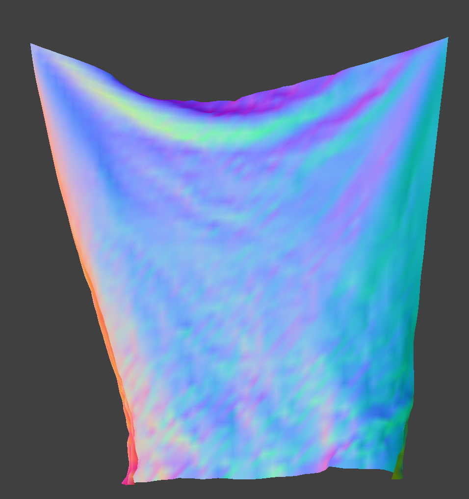

CS184/284A Spring 2025 Homework 4 Write-Up
Names: Kenny Wang, Harris Thai
Link to webpage:
https://kilowatt.github.io/cs184/4/index.html
Link to GitHub repository:
Homework 4-Slip-Days
Mirror Ball
Overview
In this project, we implement a physics-based cloth simulation, representing the cloth with a set of point masses and springs, simulating movement via numerical integration, and handling collisions with self and other objects. Only vaguely related, we also mess with some shaders!
Part 1: Masses and Springs
Some Renders
 All Constraints
All Constraints
 No Shearing
No Shearing
Only Shearing
Part 2: Simulation via Numerical Integration
Describe the effects of changing the spring constant ks; how does the cloth behave from start to rest with a very low ks? A high ks?
The spring constant determines how stiff the cloth is. With higher ks, the cloth becomes stiffer, and sags less when it comes to rest.
What about for density?
The density determines how dense, and therefore how heavy, the cloth is. With higher density, the cloth sags more. We also suspect the cloth falls a bit faster with more weight, since the force of gravity is higher compared to the spring forces.
|
Density = 1.5
|
Density = 150
|
What about for damping?
The damping determines how fast energy is lost due to friction. With higher damping, the cloth comes to a rest faster, and if damping is really low, the cloth keeps wobbling longer. In fact, if damping is set to 0, the cloth keeps on undulating forever.
|

Damping = 0
|
Damping = 1
|
For each of the above, observe any noticeable differences in the cloth compared to the default parameters and show us some screenshots of those interesting differences and describe when they occur.
Part 3: Handling Collisions with Other Objects
Collisions with Spheres
We implement sphere collisions in sphere.cpp, in the Sphere::collide function. We check if the distance between the point mass's new location and the center of the sphere is less than the radius of the sphere. If this is the case, we compute the tangent point on the surface of the sphere where the point mass should be (tracing the ray that leads from the center of the sphere towards the point mass). We then compute a "correction" vector from the point mass's last position to the new tangent point, and set the point mass's corrected new position to its last position plus this correction * (1 - friction).
Collisions with Planes
Plane collisions are implemented in plane.cpp, in the Plane::collide function. Treating the point mass's movement from its last_position to its position as a vector/ray, we compute the time t when the ray would intersect the plane. Note that we've done ray-plane/triangle collisions before. If 0 <= t <= 1, then we know there's been a collision. In this case, we can compute the tangent point along the ray where the collision occured with the plane. After computing which side of the plane the point mass collided from, we add SURFACE_OFFSET * normal to the tangent point in the correct direction, and we apply the same correction * (1 - friction) logic as with sphere collisions.
Changing the Spring Constant
When ks = 500, the spring constant is low, and the cloth becomes flexible and droopy. On the other hand, when ks = 50,000, the cloth gets stiff, and it sort of balloons outwards and maintains its squareish shape.
"It goes from droopy to wonton almost" - Harris
"It looks like my hair when it's wet vs dry" - Kenny
|
ks = 500
|
ks = 5000
|
Damping = 1
|
On Plane
Part 4: Handling Self-Collision
Hashing Positions
To avoid colliding every point mass against every single other point mass, all the time, we use a system where we hash points into boxes, and only check for collisions between points in the same box. Defining each box to have dimensions w, h, and t as suggested in the project spec, we compute box-aligned x, y, and z by taking the xyz coordinates of the point mass and subtracting the remainder when divided by w, h, or t (found using fmod). Then we can use x + y*height + z*width*height as a unique hash identifying the box that the point mass belongs in.
Each timestep, we rebuild a spatial map of all the point masses by hashing them all into a hashmap. Within each box, we check for collisions between point masses. If a point mass and a different "candidate point mass" are within 2 * thickness distance apart, we compute a correction vector that can be applied to the original point mass such that the two would be 2 * thickness distance apart. After checking against all possible candidates, these corrections are averaged, and scaled down by simulation_steps before being applied.
Default Settings
Varying Spring Constant
With low spring constant, the cloth folds on itself more easily than normal, and at a more random angle. With a higher spring constant, it looks still kind of the same, if a bit stiffer when falling.
Varying Density
Again, density has the opposite effect as spring constant. High density makes the cloth less stiff, so it folds more readily and at a stranger angle, while low density looks mostly the same as default.
Part 5: Shaders
Shaders
Shaders are small programs that execute sections of the graphics pipeline, in parallel and on the GPU, allowing for way faster rendering. The two types of shaders we deal with in this project are vertex shaders and fragment shaders. Descriptions here are a little bit specific to this project, to make it easier and save me from putting "generally" in front of every statement.
Vertex shaders apply transforms to vertices, and modify their geometry (e.g. positions, normals). They write the final position of the vertex and write varyings (no, not quite variables) for the subsequent fragment shader.
Fragment shaders take in varyings computed by the vertex shader and compute and write a color for each fragment (kind of like a pixel or sample).
Together, these shaders can compute geometry and colors for our scene, giving us cool lighting and material effects.
Blinn-Phong Shading Model
The Blinn-Phong shading model, which we learned way earlier in the semester, models shading using 3 components. The first, ambient lighting, models a small amount of illumination even without direct light sources, accounting for things like light bouncing. The second, diffuse lighting, models, well, diffusely scattered light, using the dot product of the normal and light directions. Finally, the third component, specular lighting, does some slightly more complicated math (explained in the spec) to show specular highlights, based on how shiny the object is. By combining all 3 parts, we end up with pretty satisfying images.
|
Ambient
|
Diffuse
|
Specular
|
All
|
Our Own Texture
This didn't turn out 100% as well as we hoped, since the image is super bright, and the version we ended up using has transparent parts to make up for not being a perfect square.
Bump Mapping
|
Coarse
|
Coarse (Sphere)
|
|
Fine
|
Fine (Sphere)
|
Displacement Mapping
Not so high
|
Coarse
|
Coarse (Sphere)
|
|
Fine
|
Fine (Sphere)
|
Cranked up
|
Coarse
|
Coarse (Sphere)
|
|
Fine
|
Fine (Sphere)
|
Unlike bump mapping, displacement mapping actually changes the locations of the vertices. We've cranked up the height suuuper high so you can see. With coarsely defined points, displacement mapping can cause the surface to look a lot more jagged than it should be. On the other hand, if there are enough points, displacement mapping could perhaps a little bit more realistic since it's actually bumpy rather than just creating the illusion of bumpiness by modifying normals.
Mirror Shading